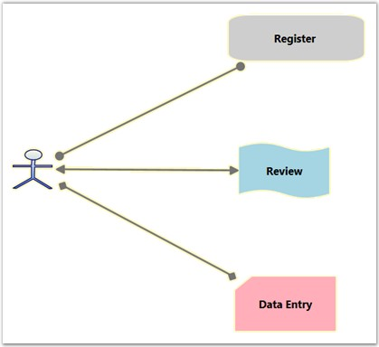
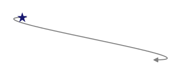
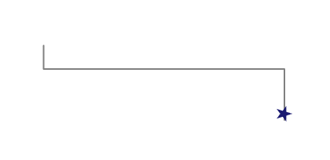
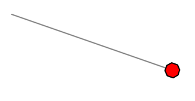
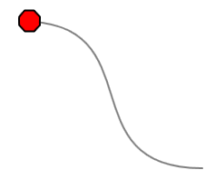

Head and tail decorator shape properties provide an option to add arrows and to customize these arrows. End point decorators can be provided for all types of connectors. There are a number of shapes available for head and tail decorators.
Table 36: Property Table
|
Property |
Description |
Type of the property |
Value it accepts |
Any other dependencies/ sub properties associated |
|
HeadDecoratorShape |
Gets or sets the head decorator shape of the connection. Four values namely None, Arrow , Diamond and Circle can be specified. Default value: HeadDecoratorShape.None |
CLR property |
· DecoratorShape.None · DecoratorShape.Arrow · DecoratorShape.Diamond · DecoratorShape.Circle · DecoratorShape. Custom |
No |
|
TailDecoratorShape |
Gets or sets the head decorator shape of the connection. Four values namely None, Arrow , Diamond and Circle can be specified. Default value: TailDecoratorShape.Arrow |
CLR property |
· DecoratorShape.None · DecoratorShape.Arrow · DecoratorShape.Diamond · DecoratorShape.Circle · DecoratorShape.Custom |
No |
|
HeadDecoratorStyle |
Provides customization option for the head decorator shape. |
CLR property |
DecoratorStyle |
No |
|
TailDecoratorStyle |
Provides customization option for the tail decorator shape. |
CLR property |
DecoratorStyle |
No |
|
CustomHeadDecoratorStyle |
Provides option for Custom Head Decorator Style for Lineconnector |
Style |
Dependency Property |
No |
|
CustomTailDecoratorStyle |
Provides option for Custom Tail Decorator Style for Lineconnector |
Style |
Dependency Property |
No |
Arrow settings can be changed using HeadDecoratorShape and TailDecoratorShape properties. Both head and tail decorators consist of the same set of properties that allow one to customize the settings as required.
Types of decorator shapes
· Arrow
· Diamond
· Circle
The following code shows how to set these properties.
|
[C#]
LineConnector l1 = new LineConnector(); l1.HeadNode = n1; l1.TailNode = n2; l1.ConnectorType = ConnectorType.Bezier; l1.HeadDecoratorShape = DecoratorShape.Diamond; l1.TailDecoratorShape = DecoratorShape.Circle; diagramModel.Connections.Add(l1); |
|
[VB]
Dim l1 As New LineConnector() l1.HeadNode = n1 l1.TailNode = n2 l1.ConnectorType = ConnectorType.Bezier l1.HeadDecoratorShape = DecoratorShape.Diamond l1.TailDecoratorShape = DecoratorShape.Circle diagramModel.Connections.Add(l1) |

Figure 69: Decorator Shapes
CustomDecoratorShape
Decorator shapes can be customized in two ways.
· Using CustomHeadDecoratorStyle and CustomTailDecoratorStyle
· Using HeadDecoratorStyle and TailDecoratorStyle
CustomDecoratorShape using Style and Setters
HeadDecoratorShape and TailDecoratorShape can be customized by defining a required style for CustomHeadDecoratorStyle, and CustomTailDecoratorStyle respectively.
|
[XAML]
<Window.Resources> <Style TargetType="{x:Type Path}" x:Key="Deco1"> <Setter Property="Data" Value="M 9,2 11,7 17,7 12,10 14,15 9,12 4,15 6,10 1,7 7,7 Z"></Setter> <Setter Property="Width" Value="20"/> <Setter Property="Fill" Value="MidnightBlue" /> <Setter Property="Height" Value="20"/> </Style> </Window.Resources> |
|
[XAML]
<syncfusion:LineConnector ConnectorType="Bezier" Label="Line1" LabelWidth="50" IsSelected="True" StartPointPosition="100,400" EndPointPosition="100,500" HeadDecoratorShape="Custom" CustomHeadDecoratorStyle="{StaticResource Deco1}"/> |
|
[C#]
LineConnector l1 = new LineConnector(); l1.ConnecorType = ConnectorType.Bezier; l1.HeadDecoratorShape = DecoratorShape.Custom; l1.StartPointPosition = New Point(100, 100); l1.EndPointPosition = New Point(200, 200); l1.CustomHeadDecoratorStyle = this.Resources["deco1"] as Style; diagramModel.Connections.Add(l1); |
|
[VB]
Dim l1 As New LineConnector() l1.ConnectorType = ConnectorType.Bezier l1.HeadDecoratorShape = DecoratorShape.Custom l1.StartPointPosition = New Point(100, 100) l1.EndPointPosition = New Point(200, 200) l1.CustomHeadDecoratorStyle = TryCast(Me.Resources("Deco1"), Style) diagramModel.Connections.Add(l1) |

Figure 70: CustomHeadDecoratorShape with CustomHeadDecoratorStyle
|
[XAML]
<Window.Resources> <Style TargetType="{x:Type Path}" x:Key="Deco1"> <Setter Property="Data" Value="M 9,2 11,7 17,7 12,10 14,15 9,12 4,15 6,10 1,7 7,7 Z"></Setter> <Setter Property="Width" Value="20"/> <Setter Property="Fill" Value="MidnightBlue" /> <Setter Property="Height" Value="20"/> </Style> </Window.Resources> |
|
[XAML]
<syncfusion:LineConnector ConnectorType="Orthogonal” Name="Line1" LabelWidth="50" IsSelected="True" StartPointPosition="100,400" EndPointPosition="100,500" TailDecoratorShape="Custom" CustomTailDecoratorStyle="{StaticResource Deco1}"/> |
|
[C#]
LineConnector l1 = new LineConnector(); l1.ConnecorType = ConnectorType.Orthogonal; l1.HeadDecoratorShape = DecoratorShape.Custom; l1.StartPointPosition = New Point(100, 100); l1.EndPointPosition = New Point(200, 200); l1.CustomTailDecoratorStyle = this.Resources["deco1"] as Style; diagramModel.Connections.Add(l1); |
|
[VB]
Dim l1 As New LineConnector() l1.ConnectorType = ConnectorType. Orthogonal l1.TailDecoratorShape = DecoratorShape.Custom l1.StartPointPosition = New Point(100, 100) l1.EndPointPosition = New Point(200, 200) l1.TailHeadDecoratorStyle = TryCast(Me.Resources("Deco1"), Style) diagramModel.Connections.Add(l1) |

Figure 71: CustomTailDecoratorShape with CustomTailDecoratorStyle
CustomDecoratorShape using DecoratorStyle
HeadDecoratorShape and TailDecoratorShape can be customized by defining a required style for HeadDecoratorStyle and TailDecoratorStyle respectively.
|
[C#]
LineConnector line1 = new LineConnector(); line1.ConnectorType = ConnectorType.Straight; line1.HeadDecoratorShape = DecoratorShape.Custom; line1.HeadDecoratorStyle = new DecoratorStyle() { Fill = Brushes.Red, Data = Geometry.Parse("M160.329212944922,-3.01862318403769L-2.5,130.5 - 5.00506481618589,311.336343115124 163.335290725089,448.012415349887 436.888368720338,448.012420654297 593,309 591.5,133.5 429.5,-1.5z"), Stroke = Brushes.Black, Height=20, Width=20 }; line1.StartPointPosition = new Point(100, 100); line1.EndPointPosition = new Point(200, 200); diagramModel.Connections.Add(line1); |
|
[VB]
Dim line1 As New LineConnector() line1.ConnectorType = ConnectorType.Straight line1.HeadDecoratorShape = DecoratorShape.[Custom] line1.HeadDecoratorStyle = New DecoratorStyle() With { _ .Fill = Brushes.Red, _ .Data = Geometry.Parse("M160.329212944922,-3.01862318403769L-2.5,130.5 -5.00506481618589,311.336343115124 163.335290725089,448.012415349887 436.888368720338,448.012420654297 593,309 591.5,133.5 429.5,-1.5z"), _ .Stroke = Brushes.Black, _ .Height = 20, _ .Width = 20 _ } line1.StartPointPosition = New Point(100, 100) line1.EndPointPosition = New Point(200, 200) diagramModel.Connections.Add(line1) |

Figure 72: : CustomHeadDecoratorShape with HeadDecoratorStyle
Customizing TailDecoratorShape with TailDecoratorStyle
|
[C#]
LineConnector line1 = new LineConnector(); line1.ConnectorType = ConnectorType.Bezier; line1.TailDecoratorShape = DecoratorShape.Custom; line1.TailDecoratorStyle = new DecoratorStyle() { Fill = Brushes.Red, Data = Geometry.Parse("M160.329212944922,-3.01862318403769L-2.5,130.5 -5.00506481618589,311.336343115124 163.335290725089,448.012415349887 436.888368720338,448.012420654297 593,309 591.5,133.5 429.5,-1.5z"), Stroke = Brushes.Black, Height=20, Width=20 }; line1.StartPointPosition = new Point(200, 200); line1.EndPointPosition = new Point(100, 100); diagramModel.Connections.Add(line1); |
|
[VB]
Dim line1 As New LineConnector() line1.ConnectorType = ConnectorType.Bezier line1.TailDecoratorShape = DecoratorShape.[Custom] line1.TailDecoratorStyle = New DecoratorStyle() With { _ .Fill = Brushes.Red, _ .Data = Geometry.Parse("M160.329212944922,-3.01862318403769L-2.5,130.5 -5.00506481618589,311.336343115124 163.335290725089,448.012415349887 436.888368720338,448.012420654297 593,309 591.5,133.5 429.5,-1.5z"), _ .Stroke = Brushes.Black, _ .Height = 20, _ .Width = 20 _ } line1.StartPointPosition = New Point(200, 200) line1.EndPointPosition = New Point(100, 100) diagramModel.Connections.Add(line1) |

Figure 73: CustomTailDecoratorShape with TailDecoratorStyle
 SegmentDecoratorShape
SegmentDecoratorShape